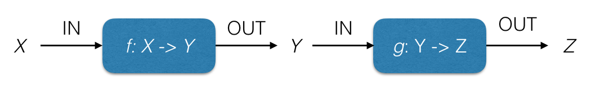
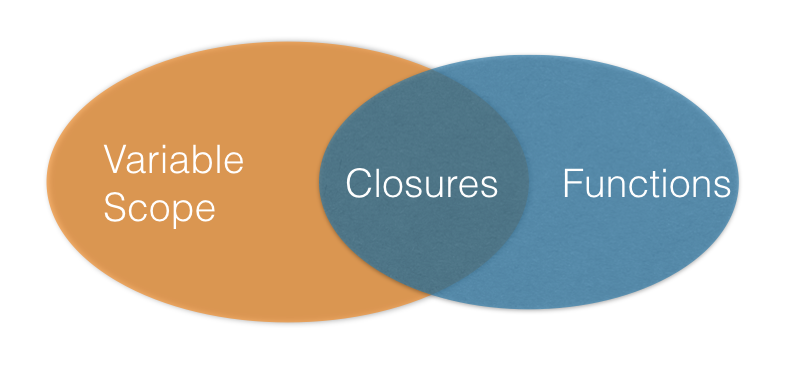
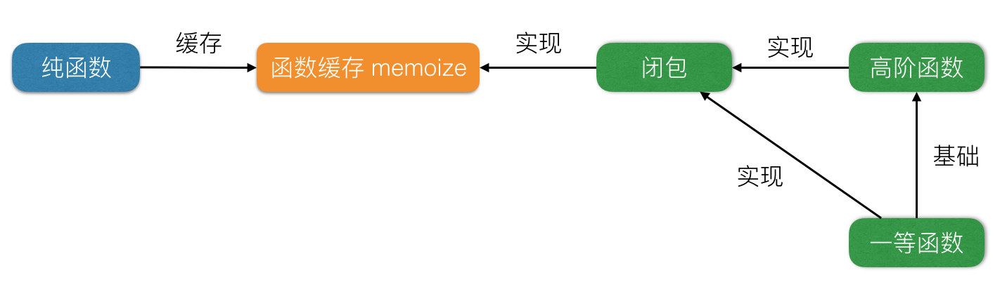

函数式编程中的函数有三种不同的解读方式，分别为纯函数、高阶函数和一等函数。本文分别对这三者的概念、应用和联系进行详解。
纯函数
定义：
- 相同的输入必定产生相同的输出；
- 在计算的过程中，不会产生副作用。
满足上述两个条件，我们就说该函数是纯函数。
纯函数也即数学意义上的函数，表达的是数据之间的转换（映射）关系，而非计算步骤的详述。数学函数的定义：
函数通常由定义域 X 、值域 Y 以及定义域到值域的映射 f （f: X -> Y）组成。
纯函数让我们对写出的函数具有完全的控制能力。纯函数的结果 必须 只依赖于输入参数，不受外部环境的影响；同时纯函数在计算结果的过程中，也不会影响（污染）外部环境，即不会产生副作用。
函数组合
纯函数定义中的两个条件保证了它（的计算过程）与外界是完全隔离，这也是函数组合的基础。
只有函数组合中的所有函数都是纯函数，我们组合起来的新函数才会是纯函数。我们可以对使用纯函数组合出来的新函数从数学上证明（推导）其正确性，而无需借助大量的单元测试。
只要在函数组合时引入一个非纯函数，整个组合出来的函数将沦为非纯函数。如果将函数组合比作管道的拼接，只要组成管道的任何一小节有泄露或者外部注入，我们便失去了对整条管道的完全控制。
要想实现函数组合，还需要满足连续性，描述如下：
因为纯函数可以看作定义域到值域映射，待组合的函数中的上一个函数的值域须等于下一个函数的定义域，也即上一个函数的输出（类型）等于下一个的输入（类型）。
假设有两个函数：f: X -> Y 和 g: Y -> Z，只有 codomain(f) = domain(g) 时，f 和 g 才可以组合。

引用透明及缓存
在不改变整个程序行为的情况下，如果能将其中的一段代码替换为其执行的结果，我们就说这段代码是引用透明的。
因此，执行一段引用透明的代码（函数），对于相同的参数，总是给出相同的结果。我们也称这样的函数（代码）为纯函数。
引用透明的一个典型应用即函数缓存。我们可以将已经执行过的函数输入值缓存起来，下次调用时，若输入值相同，直接跳过计算过程，用缓存结果代替计算结果返回即可。
函数缓存的实现依赖于闭包，而闭包的实现又依赖于高阶函数，高阶函数的实现又依赖于一等函数。我们按照这条依赖链，从里往外依次对它们进行讲解。
一等函数（First Class Functions）
程序语言会对基本元素的使用方式进行限制，带有最少限制的元素被称为一等公民，其拥有的 “权利” 如下：
- 可以使用变量命名；
- 可以提供给函数作为参数；
- 可以由函数作为结果返回；
- 可以包含在数据结构中；
乍一看，我们应该首先会想到程序中的基本数据结构（如 number、array、object 等）是一等公民。如果函数也被视为一等公民，我们便可以像使用普通数据一样对其使用变量命名，作为参数或返回值使用，或者将其包含在数据结构中。在这里函数和数据的边界开始变得不再那么分明了。函数被视为一等公民后，其能力和适用范围被大大扩展了。
下面使用 JavaScript 对上面第一条和第四条 “权利” 进行讲解。第二、三条与高阶函数密切相关，将放到下一节的高阶函数中讲解。
使用变量命名
上面代码定义了一个求平方值的函数，并将其赋给了 square 变量。
可以包含在数据结构中
Ramda 中有一个API：evolve，其接受的首个参数便是一个属性值为函数的对象。evolve 函数会递归地对 "待处理对象" 的属性进行变换，变换的方式由 transformation 内置函数属性值的对象定义。示例如下（示例中的 R.xxx 都是 Ramda 中的API，相关API的功能可以参考Ramda文档）：
高阶函数
定义：
使用函数作为输入参数，或者返回结果为函数的函数，被称为高阶函数。
作为参数或返回值的函数，是一等函数的应用之一。高阶函数以一等函数作为基础，只有支持一等函数的语言才能进行高阶函数编程。
以熟悉的 filter 函数为例，我们可以用 filter 对列表中的元素进行过滤，筛选出符合条件的元素。filter 的类型签名和示例代码如下：
filter 接受一个判断函数（判断输入值是否为偶数）isEven，返回一个过滤出偶数的函数 filterEven。
闭包
定义：
闭包是由函数及该函数捕获的其上下文中的自由变量组成的记录
举例讲：
上述代码中返回的函数 addInner 及由其捕获的在其上下文中定义的自由变量 xIn，便组成了一个闭包。

上述代码中最外层的 add 函数是一个高阶函数，其返回值为一等函数 addInner。
其实 add 函数的参数 x 也是 addInner 上下文的一部分，所以 'xIn' 也就没有存在的必要了，add 代码优化如下：
借助于箭头函数，我们可以进一步优化 add 的实现：
是不是非常简洁？由此我们可以一窥函数式编程强大的表达能力。
闭包主要用来做数据缓存，而数据缓存应用非常广泛：包括函数工厂模式、模拟拥有私有变量的对象、函数缓存、还有大名鼎鼎的柯里化。
其实上述代码中 add 函数便是柯里化形式的函数。
上述代码中的 const inc = add(1); 和 const plus2 = add(2); 是一种函数工厂模式，通过向 add 函数传入不同的参数，便会产生功能不同的函数。函数工厂可以提高函数的抽象和复用能力。
例如我们有一个如下形式的 Ajax 请求函数：
我们抽象出了最一般的 ajax 请求函数，在具体应用时，我们用能通过函数工厂生产出作用不同的函数。
通过上面几个小节，我们讲解了纯函数（数学意义上的函数）、一等函数、高阶函数，还有闭包。
下面通过一个集上述所有概念于一身的 函数缓存 ，来结束函数式编程中的 “函数们” 的论述。
函数缓存 memoize
函数实现：
memoize 的功能是对传入函数 pureFunc 进行缓存，返回缓存版本的 pureFunc。当我们使用参数调用缓存的函数时，缓存的函数会到 cache 中查找该参数是否被缓存过，如果有缓存，则不需要再次计算，直接返回已缓存值，否则对本次输入的参数进行计算，缓存计算的结果以备后用，然后将结果返回。
memoize 只有对纯函数的缓存才有意义。因为纯函数是引用透明的，其输出只依赖于输入，并且计算过程不会影响外部环境。
举一个极端的例子，假如我们有一个随机数字生成函数 random(), 如果对其进行了缓存：
memoizedRandom 除了第一次生成一个随机值外，随后的调用都返回第一次缓存的值，这样就失去了 random 的意义。再假如，我们对终端字符输入函数 getchar() 进行了缓存，每次调用都会是第一次获取的字母。
memoize 内部实现了一个闭包的创建。返回的缓存函数和自由变量 cache 共同构成了一个闭包。自由变量 cached 用于对已经计算过的数据（参数）的缓存。而闭包本身是由高阶函数和一等函数实现的。

总结
本文对函数式编程中的 “函数们” 做了详细解释：纯函数、一等函数、高阶函数，并展示了它们的应用。其中纯函数是函数组合的基础；一等函数是高阶函数的实现基础，一等函数和高阶函数又是闭包的实现基础。
最后通过函数缓存函数 memoize 将纯函数、一等函数、高阶函数和闭包联系了起来，用函数式编程中的 “函数们” （函数式三镖客）的一次 “联合行动” 结束本文。